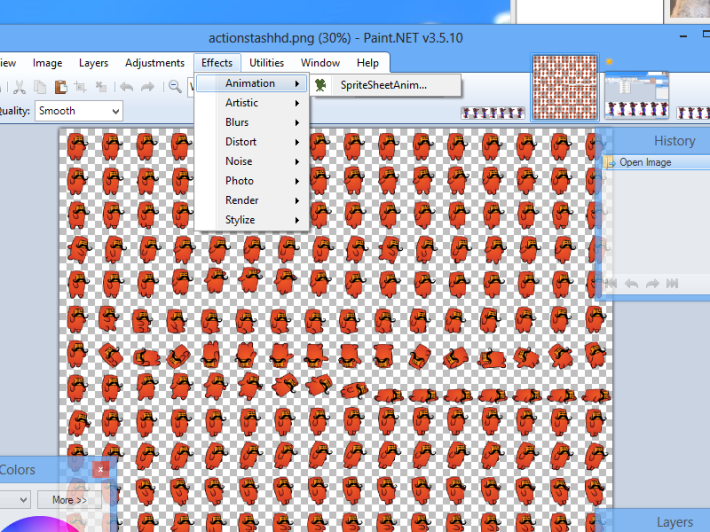

Installing Paint.net 3.5 and testing sprite animations
After doing some searching online, it looks like paint.net is a common tool people use to create and animate sprites. Here’s a small tutorial on how to get some basic sprite sheet testing running.
Installing paint.net #
To install it, simply go to http://www.getpaint.net/ (be careful about others sites you go to, I end up at a couple of malware sites before I arrived at the proper one).
The direct download URL is http://www.dotpdn.com/files/Paint.NET.3.5.10.Install.zip. If that doesn’t exist, try to navigate to getpaint.net and click download, and then “download paint.net 3.5”. Be careful! There’s a lot of adword links that look like download pages.
Downloading sprite animation plugins #
Next, you need to download the plugin! There’s a couple of sprite sheet plugins out there. I chose the spritesheet animation plugin:
Just download the “PDNSpriteSheetAnimation.zip”, which will contain a dll file. Drag and drop that into C:\Program Files\Paint.Net\Effects. C: is of course, interchangeable with whatever drive you installed paint.net on.
After you’ve installed the plugin, restart paint.net. It is now available via:
Effects > Animations > SpriteSheetAnim :

And there you go! The plugin opens up and you can test various animations with it.
Credit for the sprite sheet in the picture goes to 10firstgame’s wordpress blog.